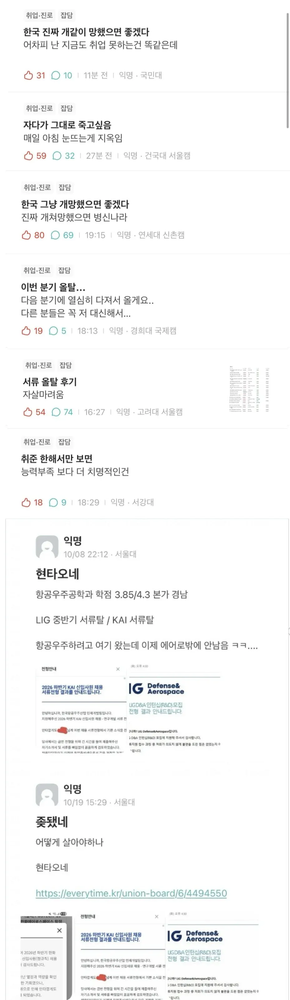
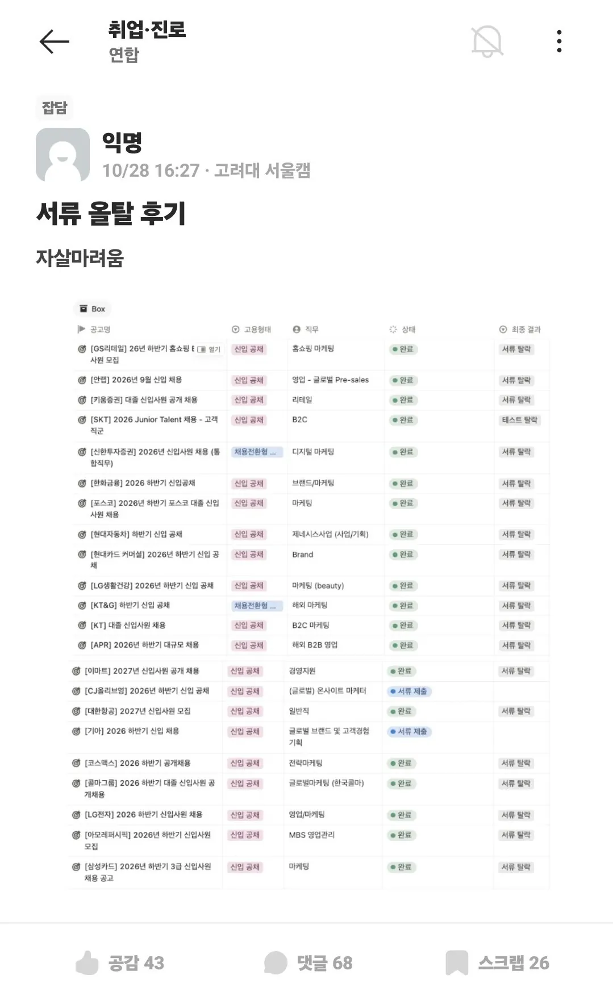

서울대 공대에 학점 거의 완벽에 가깝게 해냈는데도 서류 올탈할 정도면.....
이거 개개인이 능력으로 극복할수 있는 수준이 맞나...?


서울대 공대에 학점 거의 완벽에 가깝게 해냈는데도 서류 올탈할 정도면.....
이거 개개인이 능력으로 극복할수 있는 수준이 맞나...?
저중에 있는 대학 나왔는데
난 공시봐서 공무원함.. 9급임
동지하이
왜 7급 안봤어요 질문 몇번 받으셨습니까
저런대학나올정도면 진짜7급하지 난이도가 얼마나 차이나길레
고려대가 서류 올탈은 말이 안 되는데
심지어 안랩같은 중견을 떨어진다고??
부담스러워서 떨어트린거아닐까
우리 회산데 학부생이 고려대인 이유로 부담스럽다는건ㅋㅋㅋ개발하는데 우리 팀에 서울대 분들도 계심..
서울대가 아니라 해병대를 갔어야…
다른스펙이 아예없나 저정도는 아니던데
항공우주를 암만 설대 공대 과수석이라도, 학사 따위가 감히??? 석박은 따야 비벼볼만한거 아님?
KAI 프리패스로 가려면 석사 필수임... 교수 추천도 있어야되고
취업을 개인의 잘못으로 만들면 취업시장은 영원히 좋아지지 않을 것임.
정부가 역할을 못해서 취업시장이 병신된 거임.
얼마전 올라온 실업급여 꿀빤다고 개소리한 글도 개 병신같은 논리임.. 실업급여 줄이면 그만큼 정부에서 실업자에 대한 대책을 안세우게 된다..
처음으로 돌아가서 취업을 개인의 잘못으로 돌리지 마라.. 양질의 일자리가 늘어나지 않게 된다.
이마트랑 아모레는 뽑아도 금방 나갈거같아서 탈락시킨듯.
설공이면 지방의 라인이랑 겹칠텐데 한순간에 선택이 인생을 자지우지하노
자지우지 vs 보지좌지
후자!
다 대기업만 넣고 징징거리는건 좀 아니지..
서울대 고려대가 대기업넣고 떨어지면 징징대야지...
요즘 커뮤도 극단주위로 가는 이유도 여기가 한 몫할듯
평소 시장경제 좋아하시는 분들이 자기 문제에 속하면 정부 탓을 하기 시작하더라 ㅋㅋ
임관해 임관
서류에 쓰면 안되는 단어 같은게 있는거 아닌가? 저렇게 서류에서 떨어지기도 힘들것같은데. 아니면 너무 완벽해서그럴수도 있음. 요샌 뛰어나면 어차피 나갈애라고 판단하는곳도 있는거 같던데..
울회사도 엘리트면 그냥 안뽑음. 적당히 굴릴 수 있는애가 좋지.
이게 심지어 서류탈락인게 존나 문제인건데…
면접보고라도 떨어지면 회사 인재상이랑 안맞나보다 할수있는데 올 서탈이면 나라탓, 시장탓 할수밖에없다 진짜
석박으로 상향평준화된 공대 취업판에서 무슨 깡으로 학부취업을 시도하는겨
탓만 하세요 탓만
위에 설대 공대는 모르겠고 밑에 고대 문과는 걍 자소서를 못쓰는거 아닌가 죄다 서류탈락할 정도면
항공우주면 자리도 많지않고
서울대 카이스트 항공대가 다 먹고있을 것 같은데
그냥 자리가 원래 적은곳이지
근데 요즘 취업 지옥인건 맞음
다 대기업이긴하네
공대는 모르겠고 내가 잘모르겠고
아래 고대 문과의 경우, 뭔가 올 서류탈락인게 신기하다.
얘 학점이나 다른 정보가 없으니까 서류에서 탈락될 껀덕지가 있었나? 학점이 3.0점대 혹은 그 이하면 이해가 된다.
요즘 애덜은 정신력이~~ 눈높이가~~ 라떼는~~!!